LC-05 comparisons Saturation and vibrance have separate decisions. Quality measures hue and lightness against the input. PicEdit compatibility and unbounded color output remain diagnostics.
acceptance-skin-tones · vibrance-positive-20 · gamutMappedSRGB · matched=True
Input 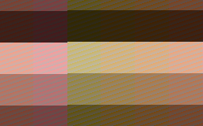
PicEdit 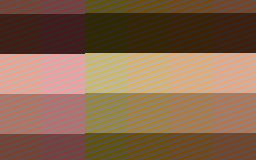
Matched candidate Candidate same values 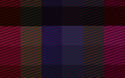
Difference ×8 Dark composite Light composite acceptance-skin-tones · vibrance-positive-20 · unbounded · matched=True
Input PicEdit Matched candidate 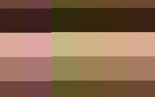
Candidate same values 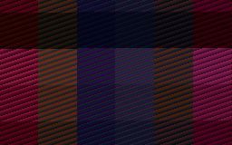
Difference ×8 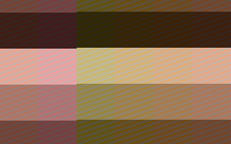
Dark composite Light composite acceptance-skin-tones · vibrance-positive-60 · unbounded · matched=True
Input PicEdit Matched candidate 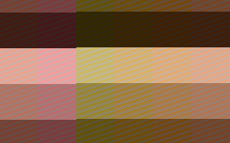
Candidate same values 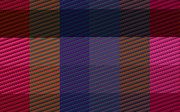
Difference ×8 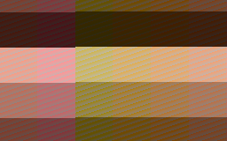
Dark composite Light composite acceptance-skin-tones · saturation-positive-20 · gamutMappedSRGB · matched=True
Input PicEdit Matched candidate 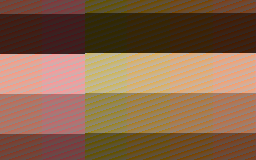
Candidate same values 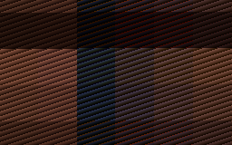
Difference ×8 Dark composite 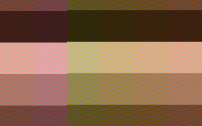
Light composite acceptance-skin-tones · saturation-positive-20 · unbounded · matched=True
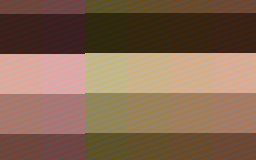
Input 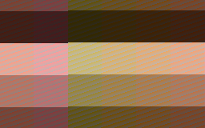
PicEdit 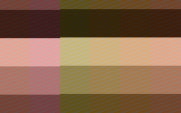
Matched candidate 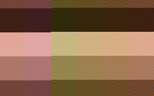
Candidate same values 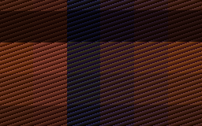
Difference ×8 Dark composite Light composite acceptance-skin-tones · saturation-positive-60 · unbounded · matched=True
Input PicEdit Matched candidate 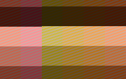
Candidate same values 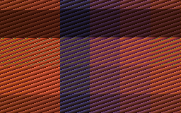
Difference ×8 Dark composite 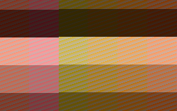
Light composite acceptance-skin-tones · saturation-positive-100 · gamutMappedSRGB · matched=True
Input 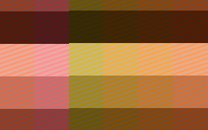
PicEdit Matched candidate 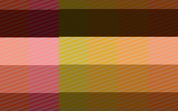
Candidate same values 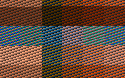
Difference ×8 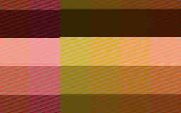
Dark composite Light composite acceptance-skin-tones · saturation-positive-100 · unbounded · matched=True
Input PicEdit Matched candidate 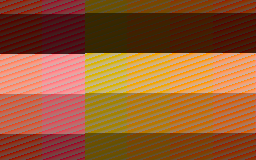
Candidate same values 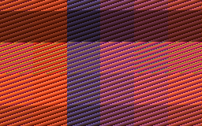
Difference ×8 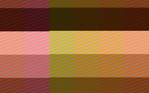
Dark composite Light composite acceptance-skin-tones · saturation-negative-100 · unbounded · matched=True
Input PicEdit Matched candidate Candidate same values Difference ×8 Dark composite Light composite acceptance-red-orange · vibrance-positive-20 · gamutMappedSRGB · matched=True
Input PicEdit Matched candidate Candidate same values Difference ×8 Dark composite Light composite acceptance-red-orange · vibrance-positive-20 · unbounded · matched=True
Input PicEdit Matched candidate Candidate same values Difference ×8 Dark composite Light composite acceptance-red-orange · vibrance-negative-20 · gamutMappedSRGB · matched=True
Input PicEdit Matched candidate Candidate same values Difference ×8 Dark composite Light composite acceptance-red-orange · vibrance-negative-20 · unbounded · matched=True
Input PicEdit Matched candidate Candidate same values Difference ×8 Dark composite Light composite acceptance-red-orange · vibrance-positive-60 · gamutMappedSRGB · matched=True
Input PicEdit Matched candidate Candidate same values Difference ×8 Dark composite Light composite acceptance-red-orange · vibrance-positive-60 · unbounded · matched=True
Input PicEdit Matched candidate Candidate same values Difference ×8 Dark composite Light composite acceptance-red-orange · vibrance-negative-60 · gamutMappedSRGB · matched=True
Input PicEdit Matched candidate Candidate same values Difference ×8 Dark composite Light composite acceptance-red-orange · vibrance-negative-60 · unbounded · matched=True
Input PicEdit Matched candidate Candidate same values Difference ×8 Dark composite Light composite acceptance-red-orange · vibrance-positive-100 · gamutMappedSRGB · matched=False
Input PicEdit Matched candidate Candidate same values Difference ×8 Dark composite Light composite acceptance-red-orange · vibrance-positive-100 · unbounded · matched=False
Input PicEdit Matched candidate Candidate same values Difference ×8 Dark composite Light composite acceptance-red-orange · vibrance-negative-100 · gamutMappedSRGB · matched=False
Input PicEdit Matched candidate Candidate same values Difference ×8 Dark composite Light composite acceptance-red-orange · vibrance-negative-100 · unbounded · matched=False
Input PicEdit Matched candidate Candidate same values Difference ×8 Dark composite Light composite acceptance-red-orange · saturation-positive-20 · gamutMappedSRGB · matched=True
Input PicEdit Matched candidate Candidate same values Difference ×8 Dark composite Light composite acceptance-red-orange · saturation-positive-20 · unbounded · matched=True
Input PicEdit Matched candidate Candidate same values Difference ×8 Dark composite Light composite acceptance-red-orange · saturation-negative-20 · gamutMappedSRGB · matched=True
Input PicEdit Matched candidate Candidate same values Difference ×8 Dark composite Light composite acceptance-red-orange · saturation-negative-20 · unbounded · matched=True
Input PicEdit Matched candidate Candidate same values Difference ×8 Dark composite Light composite acceptance-red-orange · saturation-positive-60 · gamutMappedSRGB · matched=True
Input PicEdit Matched candidate Candidate same values Difference ×8 Dark composite Light composite acceptance-red-orange · saturation-positive-60 · unbounded · matched=True
Input PicEdit Matched candidate Candidate same values Difference ×8 Dark composite Light composite acceptance-red-orange · saturation-negative-60 · gamutMappedSRGB · matched=True
Input PicEdit Matched candidate Candidate same values Difference ×8 Dark composite Light composite acceptance-red-orange · saturation-negative-60 · unbounded · matched=True
Input PicEdit Matched candidate Candidate same values Difference ×8 Dark composite Light composite acceptance-red-orange · saturation-positive-100 · gamutMappedSRGB · matched=True
Input PicEdit Matched candidate Candidate same values Difference ×8 Dark composite Light composite acceptance-red-orange · saturation-positive-100 · unbounded · matched=True
Input PicEdit Matched candidate Candidate same values Difference ×8 Dark composite Light composite acceptance-red-orange · saturation-negative-100 · gamutMappedSRGB · matched=True
Input PicEdit Matched candidate Candidate same values Difference ×8 Dark composite Light composite acceptance-red-orange · saturation-negative-100 · unbounded · matched=True
Input PicEdit Matched candidate Candidate same values Difference ×8 Dark composite Light composite acceptance-textiles-flowers · vibrance-positive-20 · gamutMappedSRGB · matched=True
Input PicEdit Matched candidate Candidate same values Difference ×8 Dark composite Light composite acceptance-textiles-flowers · vibrance-positive-20 · unbounded · matched=True
Input PicEdit Matched candidate Candidate same values Difference ×8 Dark composite Light composite acceptance-textiles-flowers · vibrance-negative-20 · gamutMappedSRGB · matched=True
Input PicEdit Matched candidate Candidate same values Difference ×8 Dark composite Light composite acceptance-textiles-flowers · vibrance-negative-20 · unbounded · matched=True
Input PicEdit Matched candidate Candidate same values Difference ×8 Dark composite Light composite acceptance-textiles-flowers · vibrance-positive-60 · gamutMappedSRGB · matched=True
Input PicEdit Matched candidate Candidate same values Difference ×8 Dark composite Light composite acceptance-textiles-flowers · vibrance-positive-60 · unbounded · matched=True
Input PicEdit Matched candidate Candidate same values Difference ×8 Dark composite Light composite acceptance-textiles-flowers · vibrance-negative-60 · gamutMappedSRGB · matched=True
Input PicEdit Matched candidate Candidate same values Difference ×8 Dark composite Light composite acceptance-textiles-flowers · vibrance-negative-60 · unbounded · matched=True
Input PicEdit Matched candidate Candidate same values Difference ×8 Dark composite Light composite acceptance-textiles-flowers · vibrance-positive-100 · gamutMappedSRGB · matched=False
Input PicEdit Matched candidate Candidate same values Difference ×8 Dark composite Light composite acceptance-textiles-flowers · vibrance-positive-100 · unbounded · matched=True
Input PicEdit Matched candidate Candidate same values Difference ×8 Dark composite Light composite acceptance-textiles-flowers · vibrance-negative-100 · gamutMappedSRGB · matched=False
Input PicEdit Matched candidate Candidate same values Difference ×8 Dark composite Light composite acceptance-textiles-flowers · vibrance-negative-100 · unbounded · matched=False
Input PicEdit Matched candidate Candidate same values Difference ×8 Dark composite Light composite acceptance-textiles-flowers · saturation-positive-20 · gamutMappedSRGB · matched=True
Input PicEdit Matched candidate Candidate same values Difference ×8 Dark composite Light composite acceptance-textiles-flowers · saturation-positive-20 · unbounded · matched=True
Input PicEdit Matched candidate Candidate same values Difference ×8 Dark composite Light composite acceptance-textiles-flowers · saturation-negative-20 · gamutMappedSRGB · matched=True
Input PicEdit Matched candidate Candidate same values Difference ×8 Dark composite Light composite acceptance-textiles-flowers · saturation-negative-20 · unbounded · matched=True
Input PicEdit Matched candidate Candidate same values Difference ×8 Dark composite Light composite acceptance-textiles-flowers · saturation-positive-60 · gamutMappedSRGB · matched=True
Input PicEdit Matched candidate Candidate same values Difference ×8 Dark composite Light composite acceptance-textiles-flowers · saturation-positive-60 · unbounded · matched=True
Input PicEdit Matched candidate Candidate same values Difference ×8 Dark composite Light composite acceptance-textiles-flowers · saturation-negative-60 · gamutMappedSRGB · matched=True
Input PicEdit Matched candidate Candidate same values Difference ×8 Dark composite Light composite acceptance-textiles-flowers · saturation-negative-60 · unbounded · matched=True
Input PicEdit Matched candidate Candidate same values Difference ×8 Dark composite Light composite acceptance-textiles-flowers · saturation-positive-100 · gamutMappedSRGB · matched=False
Input PicEdit Matched candidate Candidate same values Difference ×8 Dark composite Light composite acceptance-textiles-flowers · saturation-positive-100 · unbounded · matched=True
Input PicEdit Matched candidate Candidate same values Difference ×8 Dark composite Light composite acceptance-textiles-flowers · saturation-negative-100 · gamutMappedSRGB · matched=True
Input PicEdit Matched candidate Candidate same values Difference ×8 Dark composite Light composite acceptance-textiles-flowers · saturation-negative-100 · unbounded · matched=True
Input PicEdit Matched candidate Candidate same values Difference ×8 Dark composite Light composite acceptance-color-gradients · vibrance-positive-20 · gamutMappedSRGB · matched=True
Input PicEdit Matched candidate Candidate same values Difference ×8 Dark composite Light composite acceptance-color-gradients · vibrance-positive-20 · unbounded · matched=True
Input PicEdit Matched candidate Candidate same values Difference ×8 Dark composite Light composite acceptance-color-gradients · vibrance-negative-20 · gamutMappedSRGB · matched=True
Input PicEdit Matched candidate Candidate same values Difference ×8 Dark composite Light composite acceptance-color-gradients · vibrance-negative-20 · unbounded · matched=True
Input PicEdit Matched candidate Candidate same values Difference ×8 Dark composite Light composite acceptance-color-gradients · vibrance-positive-60 · gamutMappedSRGB · matched=True
Input PicEdit Matched candidate Candidate same values Difference ×8 Dark composite Light composite acceptance-color-gradients · vibrance-positive-60 · unbounded · matched=True
Input PicEdit Matched candidate Candidate same values Difference ×8 Dark composite Light composite acceptance-color-gradients · vibrance-negative-60 · gamutMappedSRGB · matched=True
Input PicEdit Matched candidate Candidate same values Difference ×8 Dark composite Light composite acceptance-color-gradients · vibrance-negative-60 · unbounded · matched=True
Input PicEdit Matched candidate Candidate same values Difference ×8 Dark composite Light composite acceptance-color-gradients · vibrance-positive-100 · gamutMappedSRGB · matched=False
Input PicEdit Matched candidate Candidate same values Difference ×8 Dark composite Light composite acceptance-color-gradients · vibrance-positive-100 · unbounded · matched=True
Input PicEdit Matched candidate Candidate same values Difference ×8 Dark composite Light composite acceptance-color-gradients · vibrance-negative-100 · gamutMappedSRGB · matched=False
Input PicEdit Matched candidate Candidate same values Difference ×8 Dark composite Light composite acceptance-color-gradients · vibrance-negative-100 · unbounded · matched=False
Input PicEdit Matched candidate Candidate same values Difference ×8 Dark composite Light composite acceptance-color-gradients · saturation-positive-20 · gamutMappedSRGB · matched=True
Input PicEdit Matched candidate Candidate same values Difference ×8 Dark composite Light composite acceptance-color-gradients · saturation-positive-20 · unbounded · matched=True
Input PicEdit Matched candidate Candidate same values Difference ×8 Dark composite Light composite acceptance-color-gradients · saturation-negative-20 · gamutMappedSRGB · matched=True
Input PicEdit Matched candidate Candidate same values Difference ×8 Dark composite Light composite acceptance-color-gradients · saturation-negative-20 · unbounded · matched=True
Input PicEdit Matched candidate Candidate same values Difference ×8 Dark composite Light composite acceptance-color-gradients · saturation-positive-60 · gamutMappedSRGB · matched=True
Input PicEdit Matched candidate Candidate same values Difference ×8 Dark composite Light composite acceptance-color-gradients · saturation-positive-60 · unbounded · matched=True
Input PicEdit Matched candidate Candidate same values Difference ×8 Dark composite Light composite acceptance-color-gradients · saturation-negative-60 · gamutMappedSRGB · matched=True
Input PicEdit Matched candidate Candidate same values Difference ×8 Dark composite Light composite acceptance-color-gradients · saturation-negative-60 · unbounded · matched=True
Input PicEdit Matched candidate Candidate same values Difference ×8 Dark composite Light composite acceptance-color-gradients · saturation-positive-100 · gamutMappedSRGB · matched=False
Input PicEdit Matched candidate Candidate same values Difference ×8 Dark composite Light composite acceptance-color-gradients · saturation-positive-100 · unbounded · matched=True
Input PicEdit Matched candidate Candidate same values Difference ×8 Dark composite Light composite acceptance-color-gradients · saturation-negative-100 · gamutMappedSRGB · matched=True
Input PicEdit Matched candidate Candidate same values Difference ×8 Dark composite Light composite acceptance-color-gradients · saturation-negative-100 · unbounded · matched=True
Input PicEdit Matched candidate Candidate same values Difference ×8 Dark composite Light composite acceptance-primaries-secondaries · vibrance-positive-20 · gamutMappedSRGB · matched=True
Input PicEdit Matched candidate Candidate same values Difference ×8 Dark composite Light composite acceptance-primaries-secondaries · vibrance-positive-20 · unbounded · matched=True
Input PicEdit Matched candidate Candidate same values Difference ×8 Dark composite Light composite acceptance-primaries-secondaries · vibrance-negative-20 · gamutMappedSRGB · matched=True
Input PicEdit Matched candidate Candidate same values Difference ×8 Dark composite Light composite acceptance-primaries-secondaries · vibrance-negative-20 · unbounded · matched=True
Input PicEdit Matched candidate Candidate same values Difference ×8 Dark composite Light composite acceptance-primaries-secondaries · vibrance-positive-60 · gamutMappedSRGB · matched=False
Input PicEdit Matched candidate Candidate same values Difference ×8 Dark composite Light composite acceptance-primaries-secondaries · vibrance-positive-60 · unbounded · matched=False
Input PicEdit Matched candidate Candidate same values Difference ×8 Dark composite Light composite acceptance-primaries-secondaries · vibrance-negative-60 · gamutMappedSRGB · matched=False
Input PicEdit Matched candidate Candidate same values Difference ×8 Dark composite Light composite acceptance-primaries-secondaries · vibrance-negative-60 · unbounded · matched=False
Input PicEdit Matched candidate Candidate same values Difference ×8 Dark composite Light composite acceptance-primaries-secondaries · vibrance-positive-100 · gamutMappedSRGB · matched=False
Input PicEdit Matched candidate Candidate same values Difference ×8 Dark composite Light composite acceptance-primaries-secondaries · vibrance-positive-100 · unbounded · matched=False
Input PicEdit Matched candidate Candidate same values Difference ×8 Dark composite Light composite acceptance-primaries-secondaries · vibrance-negative-100 · gamutMappedSRGB · matched=False
Input PicEdit Matched candidate Candidate same values Difference ×8 Dark composite Light composite acceptance-primaries-secondaries · vibrance-negative-100 · unbounded · matched=False
Input PicEdit Matched candidate Candidate same values Difference ×8 Dark composite Light composite acceptance-primaries-secondaries · saturation-positive-20 · gamutMappedSRGB · matched=True
Input PicEdit Matched candidate Candidate same values Difference ×8 Dark composite Light composite acceptance-primaries-secondaries · saturation-positive-20 · unbounded · matched=True
Input PicEdit Matched candidate Candidate same values Difference ×8 Dark composite Light composite acceptance-primaries-secondaries · saturation-negative-20 · gamutMappedSRGB · matched=True
Input PicEdit Matched candidate Candidate same values Difference ×8 Dark composite Light composite acceptance-primaries-secondaries · saturation-negative-20 · unbounded · matched=True
Input PicEdit Matched candidate Candidate same values Difference ×8 Dark composite Light composite acceptance-primaries-secondaries · saturation-positive-60 · gamutMappedSRGB · matched=True
Input PicEdit Matched candidate Candidate same values Difference ×8 Dark composite Light composite acceptance-primaries-secondaries · saturation-positive-60 · unbounded · matched=True
Input PicEdit Matched candidate Candidate same values Difference ×8 Dark composite Light composite acceptance-primaries-secondaries · saturation-negative-60 · gamutMappedSRGB · matched=True
Input PicEdit Matched candidate Candidate same values Difference ×8 Dark composite Light composite acceptance-primaries-secondaries · saturation-negative-60 · unbounded · matched=True
Input PicEdit Matched candidate Candidate same values Difference ×8 Dark composite Light composite acceptance-primaries-secondaries · saturation-positive-100 · gamutMappedSRGB · matched=True
Input PicEdit Matched candidate Candidate same values Difference ×8 Dark composite Light composite acceptance-primaries-secondaries · saturation-positive-100 · unbounded · matched=True
Input PicEdit Matched candidate Candidate same values Difference ×8 Dark composite Light composite acceptance-primaries-secondaries · saturation-negative-100 · gamutMappedSRGB · matched=True
Input PicEdit Matched candidate Candidate same values Difference ×8 Dark composite Light composite acceptance-primaries-secondaries · saturation-negative-100 · unbounded · matched=True
Input PicEdit Matched candidate Candidate same values Difference ×8 Dark composite Light composite acceptance-p3-boundary · vibrance-positive-20 · gamutMappedSRGB · matched=False
Input PicEdit Matched candidate Candidate same values Difference ×8 Dark composite Light composite acceptance-p3-boundary · vibrance-positive-20 · unbounded · matched=False
Input PicEdit Matched candidate Candidate same values Difference ×8 Dark composite Light composite acceptance-p3-boundary · vibrance-negative-20 · gamutMappedSRGB · matched=False
Input PicEdit Matched candidate Candidate same values Difference ×8 Dark composite Light composite acceptance-p3-boundary · vibrance-negative-20 · unbounded · matched=False
Input PicEdit Matched candidate Candidate same values Difference ×8 Dark composite Light composite acceptance-p3-boundary · vibrance-positive-60 · gamutMappedSRGB · matched=False
Input PicEdit Matched candidate Candidate same values Difference ×8 Dark composite Light composite acceptance-p3-boundary · vibrance-positive-60 · unbounded · matched=False
Input PicEdit Matched candidate Candidate same values Difference ×8 Dark composite Light composite acceptance-p3-boundary · vibrance-negative-60 · gamutMappedSRGB · matched=True
Input PicEdit Matched candidate Candidate same values Difference ×8 Dark composite Light composite acceptance-p3-boundary · vibrance-negative-60 · unbounded · matched=False
Input PicEdit Matched candidate Candidate same values Difference ×8 Dark composite Light composite acceptance-p3-boundary · vibrance-positive-100 · gamutMappedSRGB · matched=False
Input PicEdit Matched candidate Candidate same values Difference ×8 Dark composite Light composite acceptance-p3-boundary · vibrance-positive-100 · unbounded · matched=False
Input PicEdit Matched candidate Candidate same values Difference ×8 Dark composite Light composite acceptance-p3-boundary · vibrance-negative-100 · gamutMappedSRGB · matched=False
Input PicEdit Matched candidate Candidate same values Difference ×8 Dark composite Light composite acceptance-p3-boundary · vibrance-negative-100 · unbounded · matched=False
Input PicEdit Matched candidate Candidate same values Difference ×8 Dark composite Light composite acceptance-p3-boundary · saturation-positive-20 · gamutMappedSRGB · matched=False
Input PicEdit Matched candidate Candidate same values Difference ×8 Dark composite Light composite acceptance-p3-boundary · saturation-positive-20 · unbounded · matched=False
Input PicEdit Matched candidate Candidate same values Difference ×8 Dark composite Light composite acceptance-p3-boundary · saturation-negative-20 · gamutMappedSRGB · matched=True
Input PicEdit Matched candidate Candidate same values Difference ×8 Dark composite Light composite acceptance-p3-boundary · saturation-negative-20 · unbounded · matched=True
Input PicEdit Matched candidate Candidate same values Difference ×8 Dark composite Light composite acceptance-p3-boundary · saturation-positive-60 · gamutMappedSRGB · matched=False
Input PicEdit Matched candidate Candidate same values Difference ×8 Dark composite Light composite acceptance-p3-boundary · saturation-positive-60 · unbounded · matched=True
Input PicEdit Matched candidate Candidate same values Difference ×8 Dark composite Light composite acceptance-p3-boundary · saturation-negative-60 · gamutMappedSRGB · matched=True
Input PicEdit Matched candidate Candidate same values Difference ×8 Dark composite Light composite acceptance-p3-boundary · saturation-negative-60 · unbounded · matched=True
Input PicEdit Matched candidate Candidate same values Difference ×8 Dark composite Light composite acceptance-p3-boundary · saturation-positive-100 · gamutMappedSRGB · matched=False
Input PicEdit Matched candidate Candidate same values Difference ×8 Dark composite Light composite acceptance-p3-boundary · saturation-positive-100 · unbounded · matched=True
Input PicEdit Matched candidate Candidate same values Difference ×8 Dark composite Light composite acceptance-p3-boundary · saturation-negative-100 · gamutMappedSRGB · matched=True
Input PicEdit Matched candidate Candidate same values Difference ×8 Dark composite Light composite acceptance-p3-boundary · saturation-negative-100 · unbounded · matched=True
Input PicEdit Matched candidate Candidate same values Difference ×8 Dark composite Light composite acceptance-grayscale · vibrance-positive-20 · gamutMappedSRGB · matched=False
Input PicEdit Matched candidate Candidate same values Difference ×8 Dark composite Light composite acceptance-grayscale · vibrance-positive-20 · unbounded · matched=False
Input PicEdit Matched candidate Candidate same values Difference ×8 Dark composite Light composite acceptance-grayscale · vibrance-negative-20 · gamutMappedSRGB · matched=False
Input PicEdit Matched candidate Candidate same values Difference ×8 Dark composite Light composite acceptance-grayscale · vibrance-negative-20 · unbounded · matched=False
Input PicEdit Matched candidate Candidate same values Difference ×8 Dark composite Light composite acceptance-grayscale · vibrance-positive-60 · gamutMappedSRGB · matched=False
Input PicEdit Matched candidate Candidate same values Difference ×8 Dark composite Light composite acceptance-grayscale · vibrance-positive-60 · unbounded · matched=False
Input PicEdit Matched candidate Candidate same values Difference ×8 Dark composite Light composite acceptance-grayscale · vibrance-negative-60 · gamutMappedSRGB · matched=False
Input PicEdit Matched candidate Candidate same values Difference ×8 Dark composite Light composite acceptance-grayscale · vibrance-negative-60 · unbounded · matched=False
Input PicEdit Matched candidate Candidate same values Difference ×8 Dark composite Light composite acceptance-grayscale · vibrance-positive-100 · gamutMappedSRGB · matched=True
Input PicEdit Matched candidate Candidate same values Difference ×8 Dark composite Light composite acceptance-grayscale · vibrance-positive-100 · unbounded · matched=True
Input PicEdit Matched candidate Candidate same values Difference ×8 Dark composite Light composite acceptance-grayscale · vibrance-negative-100 · gamutMappedSRGB · matched=False
Input PicEdit Matched candidate Candidate same values Difference ×8 Dark composite Light composite acceptance-grayscale · vibrance-negative-100 · unbounded · matched=False
Input PicEdit Matched candidate Candidate same values Difference ×8 Dark composite Light composite acceptance-grayscale · saturation-positive-20 · gamutMappedSRGB · matched=False
Input PicEdit Matched candidate Candidate same values Difference ×8 Dark composite Light composite acceptance-grayscale · saturation-positive-20 · unbounded · matched=False
Input PicEdit Matched candidate Candidate same values Difference ×8 Dark composite Light composite acceptance-grayscale · saturation-negative-20 · gamutMappedSRGB · matched=False
Input PicEdit Matched candidate Candidate same values Difference ×8 Dark composite Light composite acceptance-grayscale · saturation-negative-20 · unbounded · matched=False
Input PicEdit Matched candidate Candidate same values Difference ×8 Dark composite Light composite acceptance-grayscale · saturation-positive-60 · gamutMappedSRGB · matched=True
Input PicEdit Matched candidate Candidate same values Difference ×8 Dark composite Light composite acceptance-grayscale · saturation-positive-60 · unbounded · matched=True
Input PicEdit Matched candidate Candidate same values Difference ×8 Dark composite Light composite acceptance-grayscale · saturation-negative-60 · gamutMappedSRGB · matched=True
Input PicEdit Matched candidate Candidate same values Difference ×8 Dark composite Light composite acceptance-grayscale · saturation-negative-60 · unbounded · matched=True
Input PicEdit Matched candidate Candidate same values Difference ×8 Dark composite Light composite acceptance-grayscale · saturation-positive-100 · gamutMappedSRGB · matched=True
Input PicEdit Matched candidate Candidate same values Difference ×8 Dark composite Light composite acceptance-grayscale · saturation-positive-100 · unbounded · matched=True
Input PicEdit Matched candidate Candidate same values Difference ×8 Dark composite Light composite acceptance-grayscale · saturation-negative-100 · gamutMappedSRGB · matched=False
Input PicEdit Matched candidate Candidate same values Difference ×8 Dark composite Light composite acceptance-grayscale · saturation-negative-100 · unbounded · matched=False
Input PicEdit Matched candidate Candidate same values Difference ×8 Dark composite Light composite acceptance-transparency · vibrance-positive-20 · gamutMappedSRGB · matched=True
Input PicEdit Matched candidate Candidate same values Difference ×8 Dark composite Light composite acceptance-transparency · vibrance-positive-20 · unbounded · matched=True
Input PicEdit Matched candidate Candidate same values Difference ×8 Dark composite Light composite acceptance-transparency · vibrance-negative-20 · gamutMappedSRGB · matched=True
Input PicEdit Matched candidate Candidate same values Difference ×8 Dark composite Light composite acceptance-transparency · vibrance-negative-20 · unbounded · matched=True
Input PicEdit Matched candidate Candidate same values Difference ×8 Dark composite Light composite acceptance-transparency · vibrance-positive-60 · gamutMappedSRGB · matched=True
Input PicEdit Matched candidate Candidate same values Difference ×8 Dark composite Light composite acceptance-transparency · vibrance-positive-60 · unbounded · matched=True
Input PicEdit Matched candidate Candidate same values Difference ×8 Dark composite Light composite acceptance-transparency · vibrance-negative-60 · gamutMappedSRGB · matched=True
Input PicEdit Matched candidate Candidate same values Difference ×8 Dark composite Light composite acceptance-transparency · vibrance-negative-60 · unbounded · matched=True
Input PicEdit Matched candidate Candidate same values Difference ×8 Dark composite Light composite acceptance-transparency · vibrance-positive-100 · gamutMappedSRGB · matched=False
Input PicEdit Matched candidate Candidate same values Difference ×8 Dark composite Light composite acceptance-transparency · vibrance-positive-100 · unbounded · matched=True
Input PicEdit Matched candidate Candidate same values Difference ×8 Dark composite Light composite acceptance-transparency · vibrance-negative-100 · gamutMappedSRGB · matched=False
Input PicEdit Matched candidate Candidate same values Difference ×8 Dark composite Light composite acceptance-transparency · vibrance-negative-100 · unbounded · matched=False
Input PicEdit Matched candidate Candidate same values Difference ×8 Dark composite Light composite acceptance-transparency · saturation-positive-20 · gamutMappedSRGB · matched=True
Input PicEdit Matched candidate Candidate same values Difference ×8 Dark composite Light composite acceptance-transparency · saturation-positive-20 · unbounded · matched=True
Input PicEdit Matched candidate Candidate same values Difference ×8 Dark composite Light composite acceptance-transparency · saturation-negative-20 · gamutMappedSRGB · matched=True
Input PicEdit Matched candidate Candidate same values Difference ×8 Dark composite Light composite acceptance-transparency · saturation-negative-20 · unbounded · matched=True
Input PicEdit Matched candidate Candidate same values Difference ×8 Dark composite Light composite acceptance-transparency · saturation-positive-60 · gamutMappedSRGB · matched=True
Input PicEdit Matched candidate Candidate same values Difference ×8 Dark composite Light composite acceptance-transparency · saturation-positive-60 · unbounded · matched=True
Input PicEdit Matched candidate Candidate same values Difference ×8 Dark composite Light composite acceptance-transparency · saturation-negative-60 · gamutMappedSRGB · matched=True
Input PicEdit Matched candidate Candidate same values Difference ×8 Dark composite Light composite acceptance-transparency · saturation-negative-60 · unbounded · matched=True
Input PicEdit Matched candidate Candidate same values Difference ×8 Dark composite Light composite acceptance-transparency · saturation-positive-100 · gamutMappedSRGB · matched=True
Input PicEdit Matched candidate Candidate same values Difference ×8 Dark composite Light composite acceptance-transparency · saturation-positive-100 · unbounded · matched=True
Input PicEdit Matched candidate Candidate same values Difference ×8 Dark composite Light composite acceptance-transparency · saturation-negative-100 · gamutMappedSRGB · matched=True
Input PicEdit Matched candidate Candidate same values Difference ×8 Dark composite Light composite acceptance-transparency · saturation-negative-100 · unbounded · matched=True
Input PicEdit Matched candidate Candidate same values Difference ×8 Dark composite Light composite acceptance-extended-dark · vibrance-positive-20 · gamutMappedSRGB · matched=False
Input PicEdit Matched candidate Candidate same values Difference ×8 Dark composite Light composite acceptance-extended-dark · vibrance-positive-20 · unbounded · matched=False
Input PicEdit Matched candidate Candidate same values Difference ×8 Dark composite Light composite acceptance-extended-dark · vibrance-negative-20 · gamutMappedSRGB · matched=False
Input PicEdit Matched candidate Candidate same values Difference ×8 Dark composite Light composite acceptance-extended-dark · vibrance-negative-20 · unbounded · matched=False
Input PicEdit Matched candidate Candidate same values Difference ×8 Dark composite Light composite acceptance-extended-dark · vibrance-positive-60 · gamutMappedSRGB · matched=False
Input PicEdit Matched candidate Candidate same values Difference ×8 Dark composite Light composite acceptance-extended-dark · vibrance-positive-60 · unbounded · matched=False
Input PicEdit Matched candidate Candidate same values Difference ×8 Dark composite Light composite acceptance-extended-dark · vibrance-negative-60 · gamutMappedSRGB · matched=False
Input PicEdit Matched candidate Candidate same values Difference ×8 Dark composite Light composite acceptance-extended-dark · vibrance-negative-60 · unbounded · matched=False
Input PicEdit Matched candidate Candidate same values Difference ×8 Dark composite Light composite acceptance-extended-dark · vibrance-positive-100 · gamutMappedSRGB · matched=False
Input PicEdit Matched candidate Candidate same values Difference ×8 Dark composite Light composite acceptance-extended-dark · vibrance-positive-100 · unbounded · matched=False
Input PicEdit Matched candidate Candidate same values Difference ×8 Dark composite Light composite acceptance-extended-dark · vibrance-negative-100 · gamutMappedSRGB · matched=True
Input PicEdit Matched candidate Candidate same values Difference ×8 Dark composite Light composite acceptance-extended-dark · vibrance-negative-100 · unbounded · matched=False
Input PicEdit Matched candidate Candidate same values Difference ×8 Dark composite Light composite acceptance-extended-dark · saturation-positive-20 · gamutMappedSRGB · matched=False
Input PicEdit Matched candidate Candidate same values Difference ×8 Dark composite Light composite acceptance-extended-dark · saturation-positive-20 · unbounded · matched=False
Input PicEdit Matched candidate Candidate same values Difference ×8 Dark composite Light composite acceptance-extended-dark · saturation-negative-20 · gamutMappedSRGB · matched=False
Input PicEdit Matched candidate Candidate same values Difference ×8 Dark composite Light composite acceptance-extended-dark · saturation-negative-20 · unbounded · matched=True
Input PicEdit Matched candidate Candidate same values Difference ×8 Dark composite Light composite acceptance-extended-dark · saturation-positive-60 · gamutMappedSRGB · matched=False
Input PicEdit Matched candidate Candidate same values Difference ×8 Dark composite Light composite acceptance-extended-dark · saturation-positive-60 · unbounded · matched=False
Input PicEdit Matched candidate Candidate same values Difference ×8 Dark composite Light composite acceptance-extended-dark · saturation-negative-60 · gamutMappedSRGB · matched=True
Input PicEdit Matched candidate Candidate same values Difference ×8 Dark composite Light composite acceptance-extended-dark · saturation-negative-60 · unbounded · matched=True
Input PicEdit Matched candidate Candidate same values Difference ×8 Dark composite Light composite acceptance-extended-dark · saturation-positive-100 · gamutMappedSRGB · matched=False
Input PicEdit Matched candidate Candidate same values Difference ×8 Dark composite Light composite acceptance-extended-dark · saturation-positive-100 · unbounded · matched=False
Input PicEdit Matched candidate Candidate same values Difference ×8 Dark composite Light composite acceptance-extended-dark · saturation-negative-100 · gamutMappedSRGB · matched=True
Input PicEdit Matched candidate Candidate same values Difference ×8 Dark composite Light composite acceptance-extended-dark · saturation-negative-100 · unbounded · matched=True
Input PicEdit Matched candidate Candidate same values Difference ×8 Dark composite Light composite